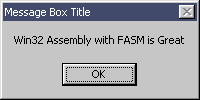
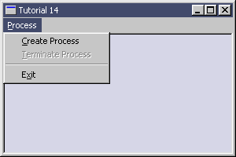

| Sulaiman Chang Personal Website |
|
Tutorial 14 : Process
Please assemble the following program first as tut_14a.exe
format PE GUI 4.0
entry start
include '%fasminc%\win32a.inc'
section '.data' data readable writeable
mbCaption db 'Message Box Title',0
mbText db 'Win32 Assembly with FASM is Great',0
section '.code' code readable executable
start:
push MB_OK
push mbCaption
push mbText
push dword NULL
call [MessageBox]
invoke ExitProcess,0
section '.idata' import data readable writeable
library KERNEL32, 'KERNEL32.DLL',\
USER32, 'USER32.DLL'
import KERNEL32,\
ExitProcess, 'ExitProcess'
import USER32,\
MessageBox, 'MessageBoxA'
Result : Then the following flat assembly code that will use the assembled tut_14a.exe
format PE GUI 4.0
entry start
include '%fasminc%\win32a.inc'
; +-----------------------+
; | menu item declaration |
; +-----------------------+
MI_PROCESS_CREATE equ 110
MI_PROCESS_TERMINATE equ 120
MI_EXIT equ 190
section '.data' data readable writeable
sTitle db 'Tutorial 14',0
sClsName db 'TUT14',0
hWindow dd ?
hInstance dd ?
msg MSG
wc WNDCLASS
hMenu dd ? ;menu handle
proExitCode dd ? ;process exit code
progName db 'tut_14a.exe',0
progStartInfo STARTUPINFO
pi PROCESS_INFORMATION
section '.code' code readable executable
start:
; +------------------------------+
; | registering the window class |
; +------------------------------+
invoke GetModuleHandle,NULL
mov [hInstance],eax
mov [wc.hInstance],eax
mov [wc.style],CS_HREDRAW or CS_VREDRAW
mov [wc.lpfnWndProc],window_procedure
mov [wc.lpszClassName],sClsName
mov [wc.lpszMenuName],30
mov [wc.hbrBackground],COLOR_WINDOW+1
invoke LoadIcon,NULL,IDI_APPLICATION
mov [wc.hIcon],eax
invoke LoadCursor,NULL,IDC_ARROW
mov [wc.hCursor],eax
invoke RegisterClass,wc
; +--------------------------+
; | creating the main window |
; +--------------------------+
invoke CreateWindowEx,\
WS_EX_CLIENTEDGE,\
sClsName,\
sTitle,\
WS_OVERLAPPEDWINDOW or WS_VISIBLE,\
CW_USEDEFAULT,\
CW_USEDEFAULT,\
300,\
200,\
NULL,\
NULL,\
[hInstance],\
NULL
mov [hWindow],eax
invoke GetMenu,eax
mov [hMenu],eax
; +---------------------------+
; | entering the message loop |
; +---------------------------+
window_message_loop_start:
invoke GetMessage,msg,NULL,0,0
or eax,eax
je window_message_loop_end
invoke TranslateMessage,msg
invoke DispatchMessage,msg
jmp window_message_loop_start
window_message_loop_end:
invoke ExitProcess,0
; +----------------------+
; | the window procedure |
; +----------------------+
proc window_procedure,hWnd,uMsg,wParam,lParam
push ebx esi edi
cmp [uMsg],WM_INITMENUPOPUP
je wmINITMENUPOPUP
cmp [uMsg],WM_COMMAND
je wmCOMMAND
cmp [uMsg],WM_DESTROY
je wmDESTROY
wmDEFAULT:
invoke DefWindowProc,[hWnd],[uMsg],[wParam],[lParam]
jmp wmBYE
wmINITMENUPOPUP:
invoke GetExitCodeProcess,[pi.hProcess],proExitCode
cmp eax,TRUE
je GetExitCodeProcess_TRUE
invoke EnableMenuItem,[hMenu],MI_PROCESS_CREATE,MF_ENABLED
invoke EnableMenuItem,[hMenu],MI_PROCESS_TERMINATE,MF_GRAYED
jmp wmBYE
GetExitCodeProcess_TRUE:
cmp [proExitCode],STILL_ACTIVE
je GetExitCodeProcess_STILL_ACTIVE
invoke EnableMenuItem,[hMenu],MI_PROCESS_CREATE,MF_ENABLED
invoke EnableMenuItem,[hMenu],MI_PROCESS_TERMINATE,MF_GRAYED
jmp wmBYE
GetExitCodeProcess_STILL_ACTIVE:
invoke EnableMenuItem,[hMenu],MI_PROCESS_CREATE,MF_GRAYED
invoke EnableMenuItem,[hMenu],MI_PROCESS_TERMINATE,MF_ENABLED
jmp wmBYE
wmCOMMAND:
cmp [wParam],0xFFFF and MI_PROCESS_CREATE
je wmCOMMAND_MI_PROCESS_CREATE
cmp [wParam],0xFFFF and MI_PROCESS_TERMINATE
je wmCOMMAND_MI_PROCESS_TERMINATE
cmp [wParam],0xFFFF and MI_EXIT
je wmCOMMAND_MI_EXIT
jmp wmBYE
wmCOMMAND_MI_EXIT:
invoke DestroyWindow,[hWnd]
jmp wmBYE
wmCOMMAND_MI_PROCESS_CREATE:
cmp [pi.hProcess],0
je pi_hProcess_IS_0
invoke CloseHandle,[pi.hProcess]
mov [pi.hProcess],0
pi_hProcess_IS_0:
invoke GetStartupInfo,[progStartInfo]
invoke CreateProcess,progName,NULL,NULL,NULL,FALSE,\
NORMAL_PRIORITY_CLASS,\
NULL,NULL,progStartInfo,pi
invoke CloseHandle,[pi.hThread]
jmp wmBYE
wmCOMMAND_MI_PROCESS_TERMINATE:
invoke GetExitCodeProcess,[pi.hProcess],proExitCode
cmp [proExitCode],STILL_ACTIVE
jne proExitCode_NOT_STILL_ACTIVE
invoke TerminateProcess,[pi.hProcess],0
proExitCode_NOT_STILL_ACTIVE:
invoke CloseHandle,[pi.hProcess]
mov [pi.hProcess],0
jmp wmBYE
wmDESTROY:
invoke PostQuitMessage,0
wmBYE:
pop edi esi ebx
return
endp
section '.idata' import data readable writeable
library KERNEL32, 'KERNEL32.DLL',\
USER32, 'USER32.DLL'
import KERNEL32,\
GetModuleHandle, 'GetModuleHandleA',\
GetExitCodeProcess, 'GetExitCodeProcess',\
GetStartupInfo, 'GetStartupInfoA',\
CreateProcess, 'CreateProcessA',\
TerminateProcess, 'TerminateProcess',\
CloseHandle, 'CloseHandle',\
ExitProcess, 'ExitProcess'
import USER32,\
RegisterClass, 'RegisterClassA',\
CreateWindowEx, 'CreateWindowExA',\
DefWindowProc, 'DefWindowProcA',\
LoadCursor, 'LoadCursorA',\
LoadIcon, 'LoadIconA',\
GetMenu, 'GetMenu',\
EnableMenuItem, 'EnableMenuItem',\
GetMessage, 'GetMessageA',\
DestroyWindow, 'DestroyWindow',\
TranslateMessage, 'TranslateMessage',\
DispatchMessage, 'DispatchMessageA',\
PostQuitMessage, 'PostQuitMessage'
section '.rsrc' resource data readable
directory RT_MENU,appMenu
resource appMenu,\
30,LANG_NEUTRAL,menuMain
menu menuMain
menuitem '&Process',0,MFR_POPUP + MFR_END
menuitem '&Create Process',MI_PROCESS_CREATE,0
menuitem '&Terminate Process',MI_PROCESS_TERMINATE,0
menuseparator
menuitem 'E&xit',MI_EXIT,MFR_END

|
| Copyright © 2004 Sulaiman Chang. All Rights Reserved. |